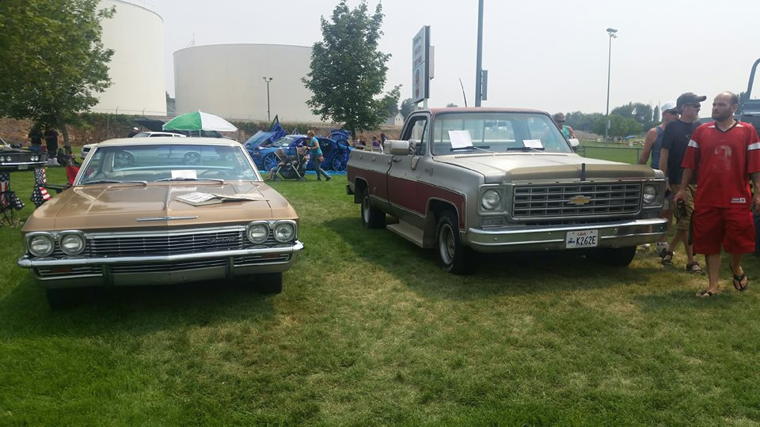

Hello! My name is A.J. Fewkes. I was born in Maryland in 1997. I moved to Roy, Utah in 2000 and have been living there ever since. Roy is my home; I love the view of the mountains from my front porch.
I'm currently studying Network Management Technologies at Weber State University with a minor in English. I also play in WSU's Jazz Ensemble, Symphonic Band, and Marching Band.
I spend most of my time working. My goal is to get through college without any student loans, so I work 3 jobs to pay tuition. I'm an e-commerce processor at ShopKo, where I manage and ship online orders, A security monitor at Dillard's, where I observe and record shoplifting crimes to gather evidence for arrests, and a Maintenance Technician at my local pool, where I manage chemical levels and cleaning.
I work about 50 hours a week during the semester, and close to 80 during school breaks.
Music makes up a large portion of my interests, both in listening and performing. I've been playing the saxophone for nine years, since deciding to enroll in beginning band at the start of Junior High School. Band introduced me to a whole range of expressive music that I hadn't heard before, and taught me the value of music without words; cinematographic music (music designed to set a stage or tell a story) has become a large part of my listening repertoire since I started playing. I'm not sure who said it, but a quote that defines this discovery for me is, "Musicians are artists who paint pictures on silence". Joining the Jazz Band at Roy High School in 2013 further broadened my horizons by introducing me to the realm of Jazz music and Jazz improv. Jazz has become one of my favorite genres because I feel that improvisation is one of the purest forms of expression; a musical improvisation is something that has never been heard before it is played-- and likely will never be heard again after it's finished.
College band has vaulted my playing to a whole new level; harder music required me to practice more than I ever have before, and I learn something new every time I go to rehearsal. I'm convinced that WSU has the finest music teachers available; A class period in the band room has never been wasted during my time here.
As for listening, I do a lot of that too. I have what I'd consider to be a very broad taste; I'll listen to just about anything except for screamo or rap, and even some particular songs from those genres don't bother me too much. My activities usually dictate what's on my playlist. If I'm at the gym or working in the yard, I'll usually choose nighcore or symphonic metal to listen to, I use video game and film soundtracks while I'm doing homework, and I lean toward jazz when I want to focus on listening. I don't really have a favorite song or artist because there are so many musicians' styles that I love for many different reasons, but I can say that I'm particularly fond of anything with a full sound. A song I find myself going back to over and over, though is Stan Rogers' "Northwest Passage".
I've been going to classic car shows since before I could walk. Even now, I have a special place in my heart for the beautiful lines and shiny paint of old cars, not to mention an appreciation for the hours and hours of work it takes to maintain and restore them. Modern cars, both in looks and the way they drive, just don't have the same character to them, and they're not nearly as fun.
My dad has restored a number of classic automobiles, and his baby is a gorgeous '65 Impala convertible that he calls "Sam". He had another '65 Chevy, a Caprice, that he drove as his regular daily driver until 2003. I loved that car to death as a kid, so he gave it to me when I turned 17. I take it to shows and use it as my date night car. I named her "Christine" after the diabolical Stephen King Plymouth after my friends and I did a spoof of the film for a Spanish class while we were in High School.
My daily driver is my grandfather's retired work truck, a 1976 Chevy Silverado. It's got a big 454-cubic inch V8 engine that drinks gasoline like no other, it leaks like a sieve in the summer, and it's got more nicks, dings, and dents than dollars the government doesn't. However, despite all its flaws, I wouldn't give it up for the world. Besides the fact that it was my granddad's, driving it every day is just plain fun.
My car and truck at the Roy Days Car Show 2018.
I personally believe that memes are the lifeblood of modern American culture and the best way ever created to waste time. are you bored? Look at memes! Are you sad? Look at memes! Is your friend sad? Show them some memes! Memes can provide a solution to any emotional problem the world has to offer.
A link to my meme account on iFunny :)When I'm not working, at school, or fixing my truck, I spend a lot of time playing video games, both classic and modern. Over the last ten years are so, I've built my collection to more than 400 games on over 20 systems, both modern and classic (more than enough to keep me entertained for years to come, but that's not gonna stop me from growing it even futher!).
Much like songs, there are so many beautiful games with so many beautiful, unique qualities that it's hard for me to decide on a favorite. However, I can say that my favorite series by far is Final Fantasy. The combination of strategy and story captured me from the very first time I tried the series. Although I'm not sure I can call it my favorite game, but my favorite entry in the series is Final Fantasy VII. Its juxtaposition of steampunk and fantasy themes in a vast 3D world has stolen nearly 200 hours of my life, and I'll never regret giving those up.
The game I've spent the most time playing in the last few years is Destiny, but currently I'm bouncing between a horror game called Yomawari, a fighting adventure game called Yakuza, and NieR: Automata, a dark and whimsical JRPG about androids.
More than anything in the world, I love stories. I've found that one of the most beautiful and dynamic ways to tell a story is manga and anime. I do love to watch anime, but I read a lot more manga than watch anime. It's a little odd to get used to turning pages the opposite direction to what you're used to, but discovery of the medium was worth all of my confusion in the end. I've found many more meaningful lessons and connections to my own life in anime and manga then any other form of entertainment. Unlike video games, however, I can easily point out my top 5 manga.
| My Favorite Manga | |||
|---|---|---|---|
| Manga Title | Author | Publisher | Plot |
| The Shape of Voice | Yoshitoki Oima | Kodansha Comics | A childhood bully and his victim become friends years later. |
| I Am a Hero | Kengo Hanazawa | Dark Horse Comics | A schizophrenic man and an infection survivor take on the zombie apocalypse. |
| Scum's Wish | Mengo Yokoyari | Yen Press | Two people with an unrequited love use each other as replacements. |
| Erased | Kei Sanbe | Yen Press | A man travels back in time to prevent a string of child murders in his hometown. |
| Fullmetal Alchemist | Hiromu Arakawa | Viz Media | Two young men who lost everything in an attempt at forbidden alchemy fight to regain what they've lost. |